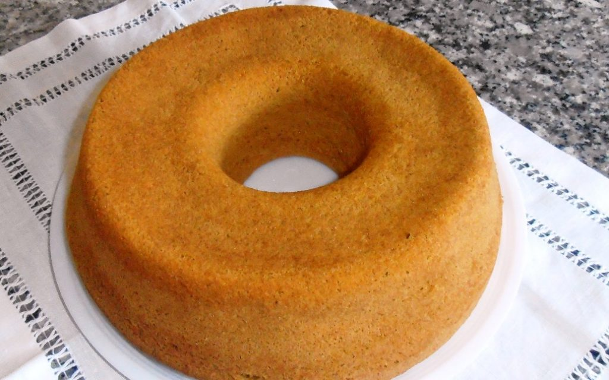

Uma receita fácil de se fazer e uma ótima sobremesa!
Ingredientes
Massa
1 cenoura grande picada (150 gramas)
Meia xícara de óleo
3 ovos
1 xícara e meia de açúcar
2 xícaras de farinha de trigo
1 colher de fermento em pó
Calda
1 lata de leite condensado
300 ml de leite
Meia xícara de achocolatado ou chocolate em pó
2 colheres (sopa) de manteiga

Modo de Preparo
Bata as cenouras, o óleo, o açúcar e os ovos no liquidificador até triturar e misturar bem.
Despeje a mistura em um recipiente e
junte a farinha usando uma espátula ou um fouet, sem bater muito.
Coloque em uma forma untada de 25cm de diâmetro, com furo no meio, leve ao forno à 200ºC por
35 minutos ou até assar por completo, fure com um palito para saber se já está pronto.
Deixe esfriar e desenforme.
Junte todos os ingredientes da calda em uma panela e leve ao fogo baixo mexendo
sempre até borbulhar e ficar no ponto de brigadeiro mole.
Desepeje a calda quente no bolo.
Dica:
Polvilhe chocolate granulado para ficar mais bonito e com um toque especial!